Miss Hackathon No-Code 2024
1ère place lors de la compétition organisée par l'AUF après 48 heures de formation, conception et présentation.
Je suis Ange Koffi
Développeuse mobile & web + UX/UI Designer
Je conçois des applications mobiles et web fluides, utiles et prêtes à passer de l'idée au produit. Mon terrain de jeu: React Native, Expo, Figma, les API et les défis tech en équipe.
À propos
Passionnée par le développement web et mobile, je crée des interfaces interactives avec une attention particulière portée à l'expérience utilisateur. Mes expériences en freelance, en entreprise et en compétition technologique m'ont appris à livrer vite, proprement et avec une vraie logique produit.
Basée à Abidjan, je travaille en télétravail sur des applications mobiles iOS/Android, des plateformes web et des prototypes UX/UI.
Dernière actualité
Une séquence récente qui reflète mon évolution professionnelle: plus de responsabilités, plus de visibilité et la même envie de construire des solutions utiles.
Distinctions
1ère place lors de la compétition organisée par l'AUF après 48 heures de formation, conception et présentation.
1ère place au concours de pitch avec une solution de lampadaires intelligents éco-responsables.
Trois distinctions, dont le Prix de la Meilleure Innovation Mobile et le Prix spécial du parrain.
3ème place et prix spécial du jury pour une application développée en équipe.
Portfolio
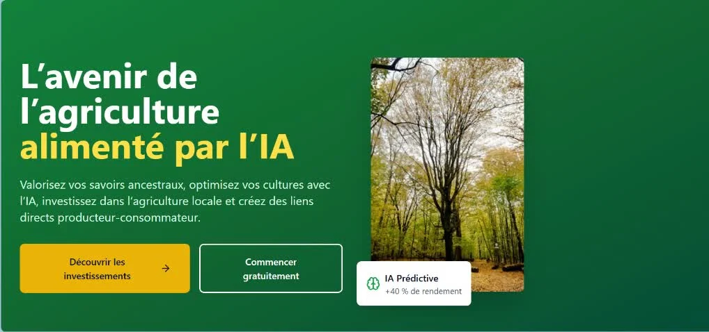
Plateforme IA qui analyse l'image d'un échantillon de sol et la localisation de la parcelle pour identifier le type de sol par deep learning. Elle croise ensuite caractéristiques agronomiques, pénuries du marché et compatibilité des cultures afin de recommander la meilleure production, avec dosage d'engrais pour préserver les sols.
Plateforme web qui analyse les contrats par IA en 60 secondes afin de détecter les clauses abusives, les risques cachés, le jargon juridique et les points à renégocier avant signature.
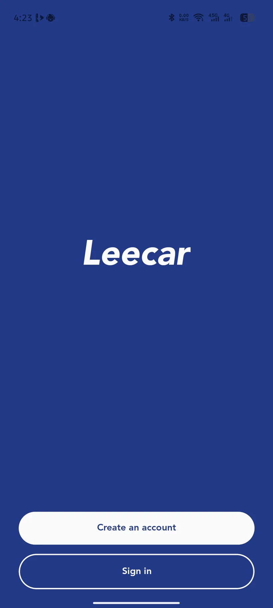
Application mobile orientée services automobiles, marketplace, stations, restaurants, offres et parcours utilisateur connecté avec authentification et géolocalisation.
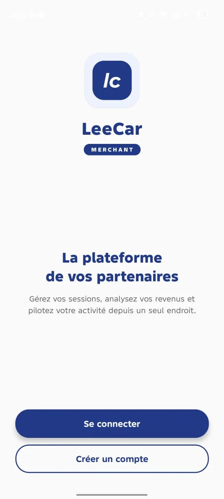
Application mobile pour prestataires LeeCar avec tableau de bord marchand, sessions, services, scanner QR, statistiques et gestion de profil.
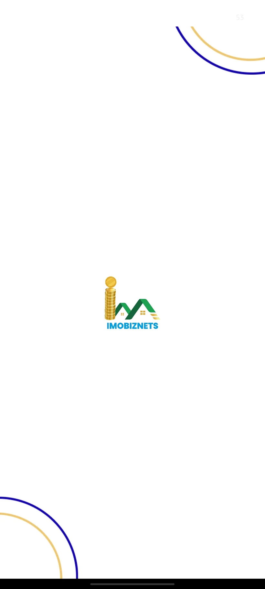
Intervention sur une solution immobilière web et mobile, avec logique métier, interfaces et amélioration de l'expérience utilisateur.
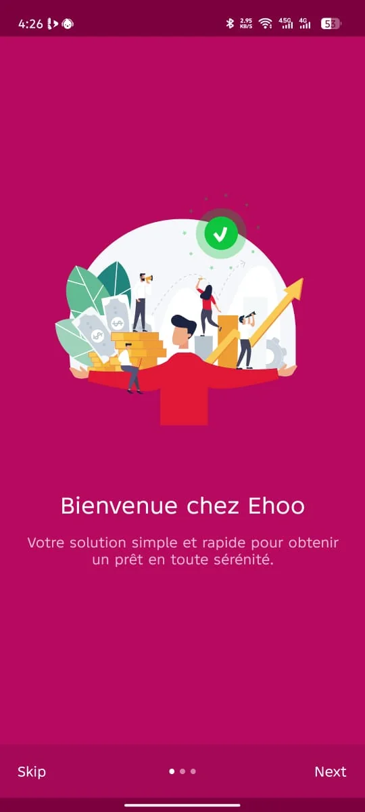
Application mobile de prêt pensée pour rendre la demande de financement simple, rapide et accessible avec un onboarding clair.
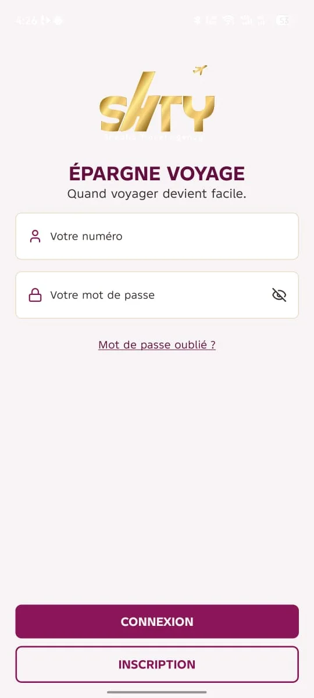
Application d'épargne voyage avec authentification, inscription et parcours centré sur la préparation financière des déplacements.
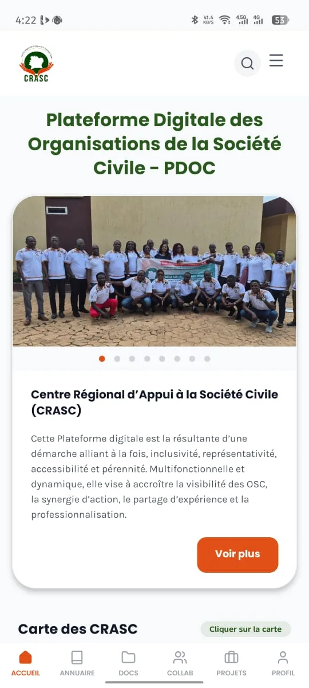
Plateforme digitale des organisations de la société civile pour annuaire, documents, collaboration, projets, carte des CRASC et visibilité des OSC.
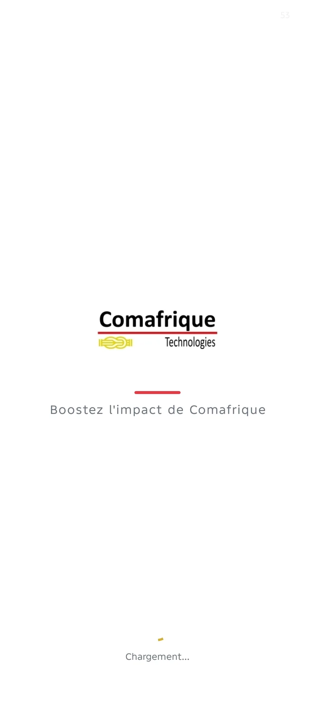
Contribution à des interfaces mobiles et web dans l'écosystème Comafrique Technologies, avec focus sur l'impact produit et la qualité d'expérience.
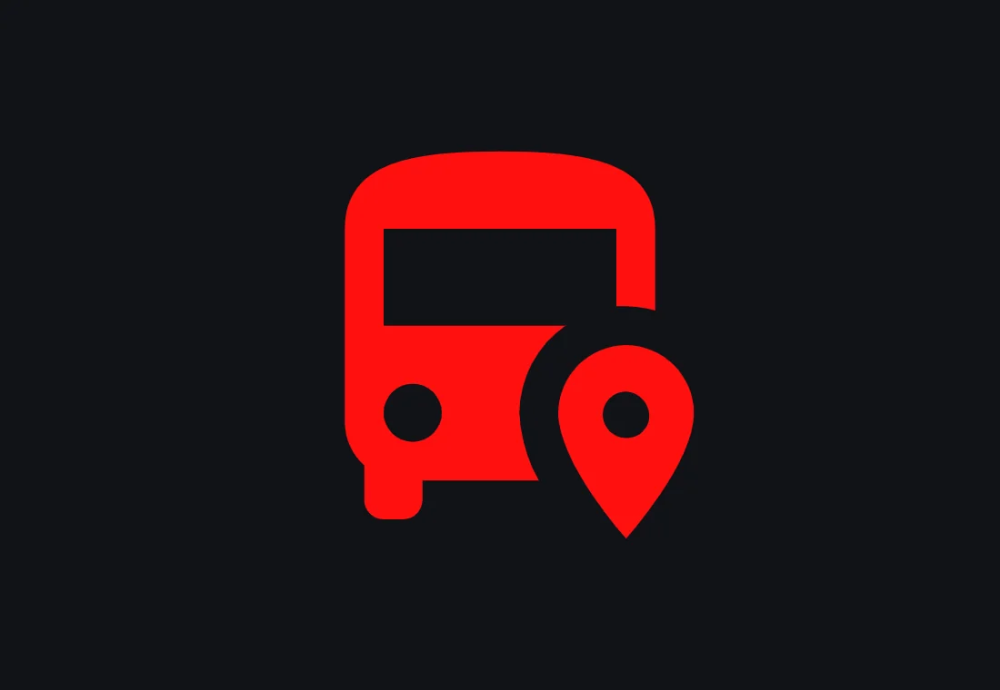
Écosystème transport avec application mobile Flutter, API NestJS, gestion des lignes, abonnements, paiements, passagers et tableaux de bord.
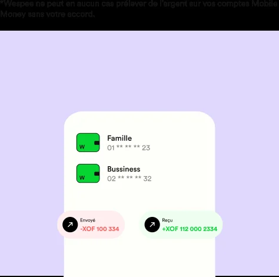
Landing page et interfaces backoffice pour une solution Mobile Money: comptes unifiés, sécurité, parrainage, dashboard client et expérience responsive.
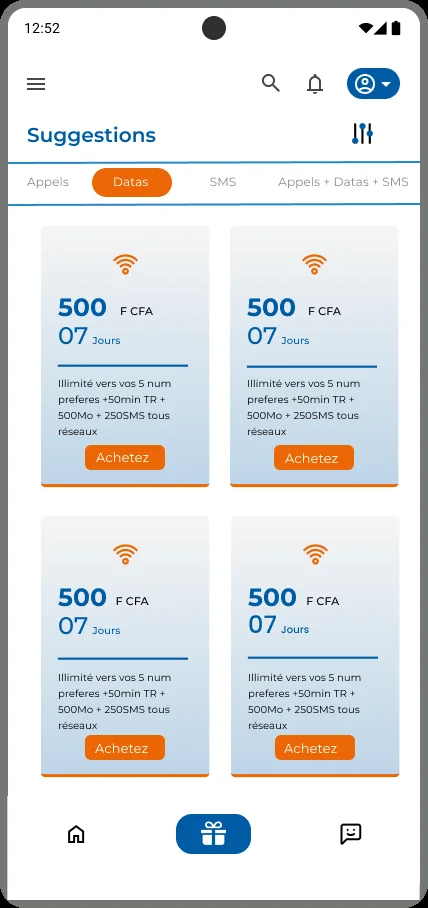
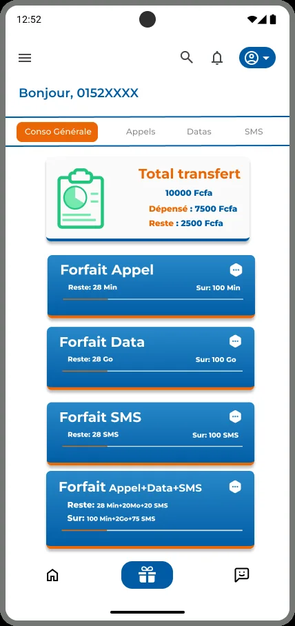
Participation à la conception et à la finalisation d'une application en équipe, avec intégration d'API, retouches UI dans le code et build final.
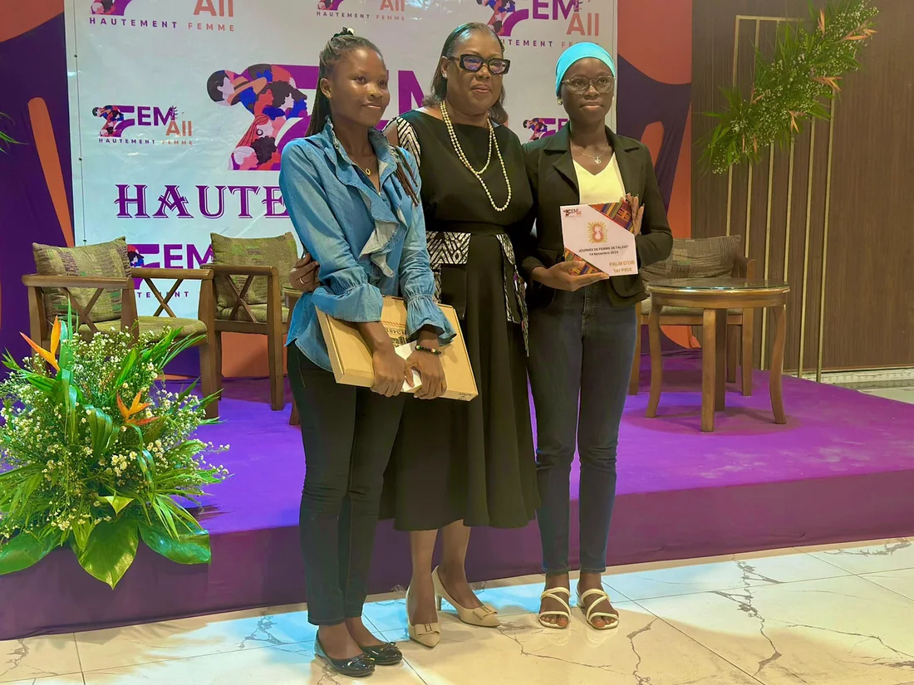
Pitch d'une solution d'éclairage public autonome et éco-responsable, défendue devant un jury et classée première.
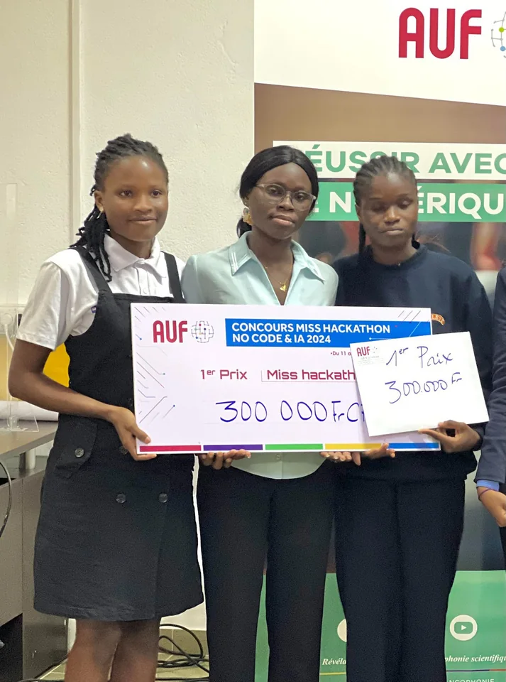
Création rapide d'une solution no-code après une formation intensive, puis présentation finale en compétition.
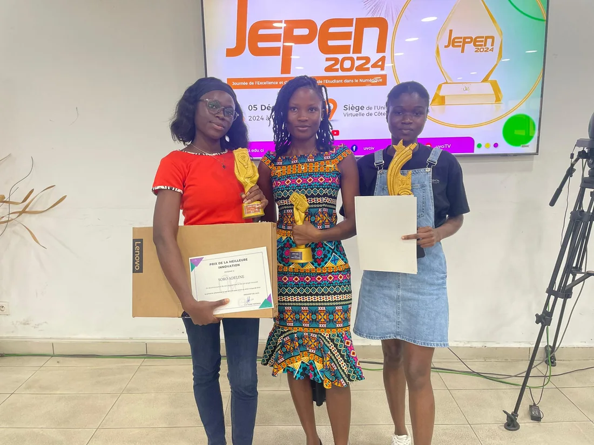
Projet étudiant distingué par trois prix, avec une reconnaissance particulière sur l'innovation mobile.
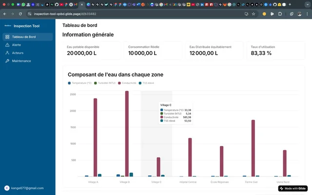
Conception d'un système avec dashboard interactif et site web autour de l'optimisation des ressources naturelles.
Parcours
Comafrique Technologie - Vridi
Développement d'applications mobile et web, design UX/UI, intégration et amélioration d'interfaces.
Freelance
Interventions sur des solutions telles que Transconnect, MEGA, Eyaa, Immobiznet, Leela-homes, Leecar et Shty.
SGDIS
Développement de solutions web en ligne et contribution aux interfaces métiers.
SGDIS
Développement d'une solution en ligne pour AMA & Développement.
Stack
Contact
Je suis disponible pour des missions en télétravail autour du développement mobile, web, UX/UI et prototypage.